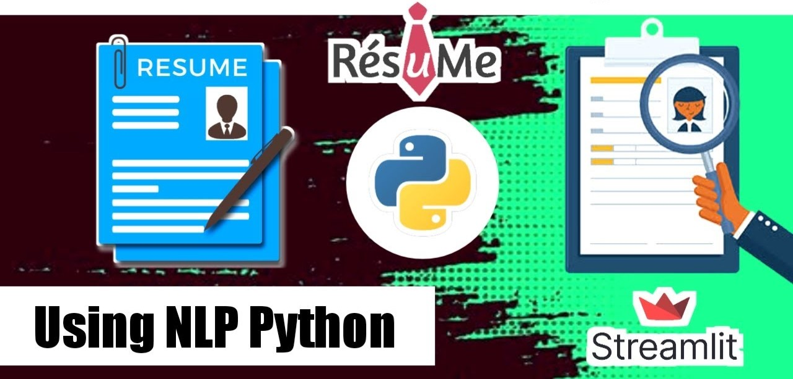
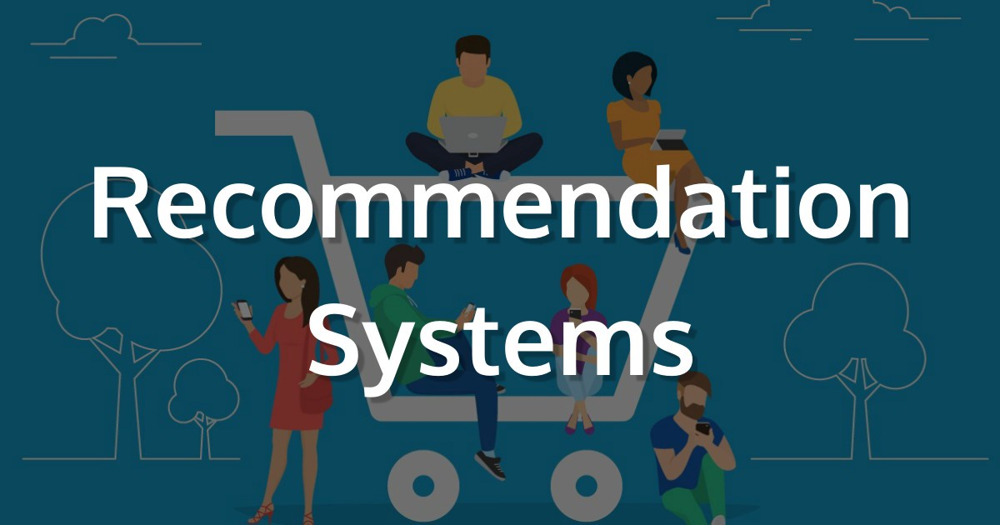

Operational excellence
PO monitoring, supplier coordination, exception tracking and process reporting.
SOURCING TRANSFORMATION · BUSINESS ANALYTICS
I'm Mohammad Kattubadi — a business operations and data professional working across sourcing operations, reporting, analytics and applied machine learning.
01 / ABOUT
I have 3+ years of experience across e-commerce and marketplace operations, with a growing focus on sourcing transformation, data analytics and machine learning. I enjoy making operational information easier to understand through accurate reporting, structured analysis and practical automation.
PO monitoring, supplier coordination, exception tracking and process reporting.
SQL, Excel, Power BI and KPI reporting that turn business data into useful insights.
Python-based data workflows, predictive modelling, NLP and machine learning projects.
02 / EXPERIENCE
Experience across sourcing transformation, e-commerce data operations and marketplace execution.
Walmart · Contract through PERSOL India
7 Sep 2026 – Present
Bengaluru, India
Work is described at a high level; confidential supplier, purchase order and internal business information is not published.
Flipkart · via TeamLease
Sep 2024 – Sep 2026
Bengaluru, India
Lavian LLP
Jul 2023 – Aug 2024
03 / TOOLKIT
Python, SQL, Pandas, NumPy, Jupyter Notebook
Power BI, Tableau, Advanced Excel, PivotTables, XLOOKUP, VLOOKUP, SUMIF, COUNTIF
scikit-learn, XGBoost, Random Forest, Regression, Classification, KNN, SVM, TF-IDF, Forecasting
Streamlit, Git, GitHub, Snowflake, Snowpark, ETL and workflow automation
Azure, Azure Data Factory, Azure ML, Docker, Kubernetes, Jenkins, GitHub Actions, Terraform
Working knowledgeKPI tracking, MIS reporting, inventory analysis, PO monitoring, instock and fill-rate reporting, supplier follow-up
04 / SELECTED WORK
Hands-on projects that demonstrate data preparation, modelling, evaluation and practical problem-solving.
Built a classification workflow to identify potentially fraudulent transactions. Applied data preparation, stratified splitting and SMOTE on training data, then evaluated model performance with fraud-focused metrics.
Python · Pandas · scikit-learn · Random Forest · Streamlit

Created an NLP workflow using TF-IDF features and Support Vector Machine to categorize resume content. Project notes report a 25% improvement in screening efficiency.
Python · NLP · TF-IDF · SVM

Developed a recommendation project to surface relevant books using available user and item information.
Python · KNN · Recommendation Systems
Built a predictive analytics project to estimate flight prices from structured features.
Python · Data Analysis · Regression
05 / EDUCATION
Sree Vahini Institute of Science & Technology
Affiliated to Jawaharlal Nehru Technological University, Kakinada
2019 – 2023CREDENTIALS
06 / CONTACT
Open to conversations about sourcing transformation, business operations, analytics and data-focused opportunities.